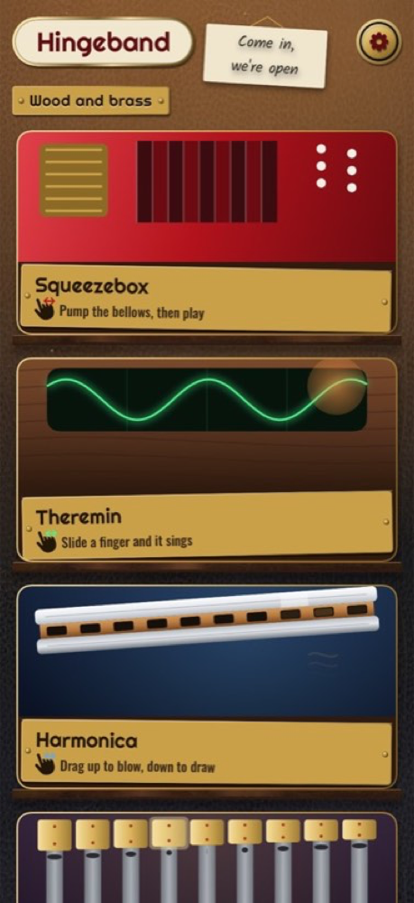
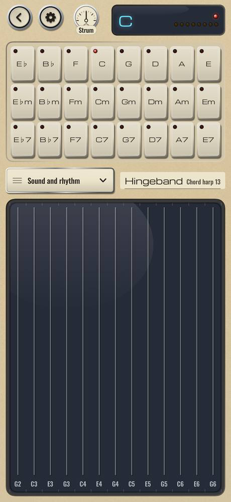
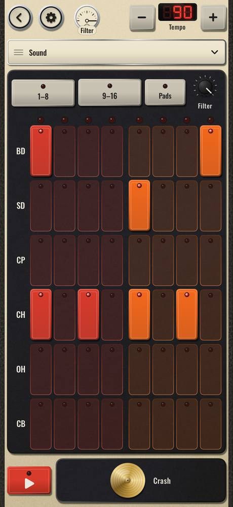
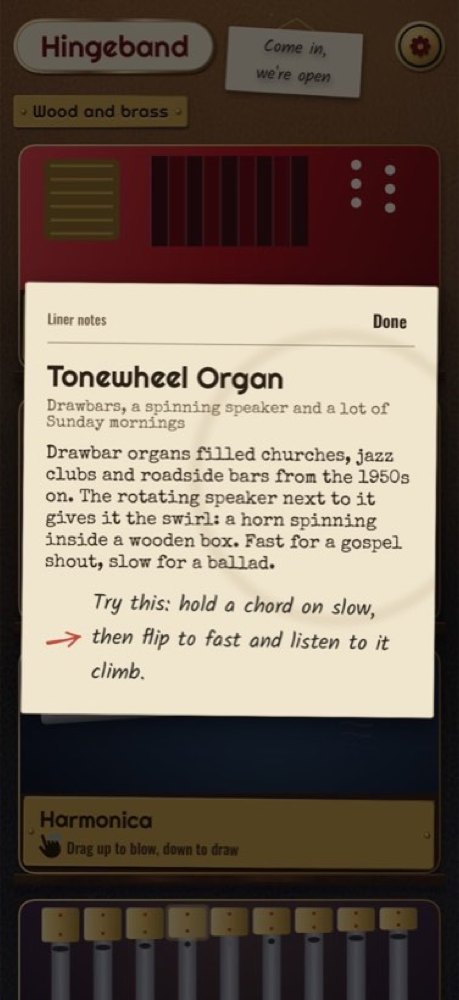

Hingeband: Retro Instruments
Synth, Drums, Guitar & More · App Store · updated 17 October 2026
What is new
Version 1.0 was rejected in review and is being resubmitted, so it is not on the store as of 17 October 2026. This page covers two instruments in it: the Chord Harp, with 24 chord buttons and 13 strings, and the Beat Machine, with six voices on 16 steps. Both play by touch.
Facts
- Version
- 1.0 (build see App Store Connect), built with Xcode 27.0
- Platforms
- iPhone, iPad
- Languages
- 15: English (US, UK, AU, CA), Spanish (Mexico, Spain), German, French, Italian, Dutch, Portuguese (Brazil), Japanese, Korean, Chinese (Simplified and Traditional)
- Price
- Free, no in-app purchases, no ads
- Privacy
- No account, works offline, no data collected.
- Accessibility
- Spoken chord names on the Chord Harp buttons, left-handed mirror mode, Reduce Motion handled, accessibility-size Dynamic Type layouts.
- Window
- Christmas draft 11 December 2026 to 1 January 2027; year-end draft 26 December 2026 to 10 January 2027
- Developer
- One developer in the UAE
Screens
App renders from the build's own snapshot pass (simulator, phone canvas 402 by 874 points). They are not device photographs and carry no marketing frame. The Chord Harp and Beat Machine renders predate the final wood-and-brass chrome.




Why now
- A Festival of Nine Lessons and Carols: 3.00pm on Thursday 24 December 2026 King's College Cambridge, official site, read 17 Oct 2026
- Sydney New Year's Eve: fireworks at 9pm and midnight City of Sydney, official site, read 17 Oct 2026